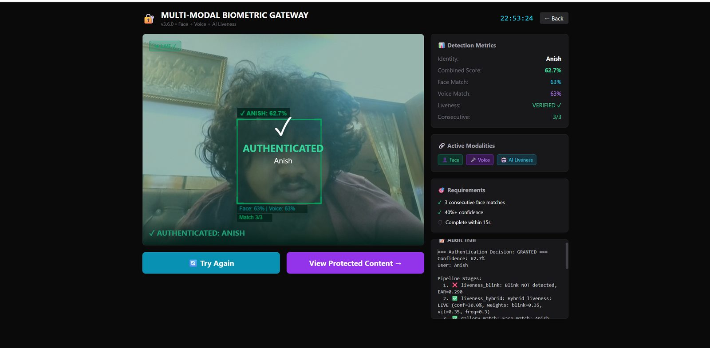
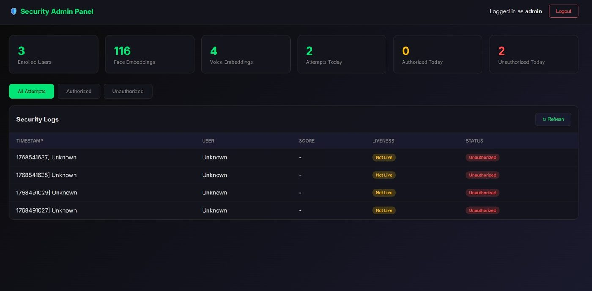

Face + voice authentication · research code
COSMIC
A face and voice authentication system built around a fusion operator with exactly one answer. Testing it honestly raised a broader question: when does learned multimodal fusion beat simply adding up calibrated scores?

The system
Five checks between a camera and a decision
Every login runs the same cascade. Cheap checks reject spoofs before any identity matching happens, and ambiguous scores escalate to a challenge instead of a guess.
-
Stage 0
Liveness gate
ViT-DINO classifier plus blink detection (eye aspect ratio) and frequency cues. Printed photos and screen replays stop here.
9.66 ms · 85.9% acc. -
Stage 1
Deepfake gate
Frequency-domain GAN fingerprints and texture consistency, trained on FaceForensics++.
10.47 ms · 85.9% val. -
Stage 2
Embeddings
InsightFace ArcFace for the face and SpeechBrain ECAPA-TDNN for the voice. Both backbones stay frozen.
512-d face192-d voice -
Stage 3
Fusion
Face and voice evidence become one identity score, matched against a pgvector gallery.
2.78 ms · ONNX -
Stage 4
Step-up
Confidence between 40% and 60% triggers a cognitive challenge about the live scene. An LLM checks the answer.
only when unsure -
Output
Decision
Granted, denied or 2FA required. Each stage writes a line to the audit trail.
GRANTED / DENIED / 2FA
Latencies are per stage as measured in the repository benchmarks. Accuracy figures: liveness on CelebA-Spoof, deepfake detection on a FaceForensics++ validation split.

Engineering
Runs as one Docker Compose stack
- API
- FastAPI with async SQLAlchemy
- Storage
- PostgreSQL + pgvector, HNSW index; SQLite fallback
- Inference
- ONNX Runtime on CUDA, CPU fallback
- Frontend
- Next.js, TypeScript, Tailwind
- Security
- bcrypt admin login, per-IP rate limit of 120 requests a minute
- Startup
- Model warm-up on boot removes a ~4 s cold start
The fusion operator
A fused identity with exactly one answer
Most learned fusion layers (cross-attention, gated pooling, iterative equilibrium solvers) can land in different places depending on initialisation and solver settings. COSMIC defines the fused embedding as the minimiser of a strictly convex energy.
The matrix H is positive definite by construction, so the minimiser exists, is unique, and has a closed form. The same face and voice always produce the same embedding, which is then projected to the unit sphere S63.
- UniqueIndependent of initialisation and of the solver. There is one answer to audit.
- Closed formNo iterations at inference. One linear solve.
- CertifiableThe map from features to logits is affine, so certified robustness radii are exact rather than estimated.
On a 76%-accurate CREMA-D convex model, about 20% of samples are exactly certified at r ≥ 0.25 with no accuracy cost. Attention fusion has no closed-form certificate and needs randomised smoothing instead.
The honest test
Then we checked it against the simplest baseline
Calibrated score fusion fits a logistic log-likelihood ratio per modality and adds them. When the modalities are independent given the label, that sum is close to Bayes-optimal. We ran it against COSMIC and against naive learned fusions on two tasks at opposite ends.
Speaker verification
449 identities · identity-disjoint CV · frozen ArcFace + ECAPA · EER, lower is better
Fusion ties. COSMIC and calibrated score fusion are a statistical tie. Concatenation and cross-attention overfit the training identities, and stay at 29 to 35% EER even with matched dropout, weight decay and spectral normalisation.
Audio-visual emotion
CREMA-D, 6 classes · speaker-independent 5-fold · WavLM + FER-ViT · accuracy, higher is better
Joint fusion wins by 6.2 points. Adding video lowers score fusion from 79.7% to 78.4% but raises joint fusion to 84.6–87.3%. Video only helps when the model sees both modalities together.
Same fusion methods, opposite outcomes. What changed between the two tasks is how much the modalities interact.
The predictor · paper draft, 18 pages
Measure synergy before you pay for learned fusion
The fusion gain G is joint-fusion accuracy minus calibrated score-fusion accuracy. The paper predicts it from the signed interaction information between the two modalities, computed from k-means cluster histograms of their embeddings. No fusion model is trained to get it.
Estimator
II = I(a; v | y) − I(a; v)
Synergy minus redundancy. Positive values mean the label creates dependence between the modalities that neither carries alone.
Correlation is the wrong signal
Face and voice both encode gender, so they correlate strongly. That information is redundant, and fusion makes gender recognition worse: 90.1% to 82.7%, a gain of −7.4 points.
It beat our own intuition
We expected language to be redundant and AV-speech to be synergistic. The estimator ranked both correctly: language gains 7.6 points, while AV-speech is audio-dominated and gains 1.6.
Stable across seeds
Each II is averaged over 15 k-means restarts and each G over 5 head initialisations. Single draws made the rank correlation swing between 0.37 and 0.83; averaged, the five-dataset ρ reproduces exactly.
Show the data as a table, including the synthetic controls
| Dataset | Modality pair | Task | II | G (pp) |
|---|---|---|---|---|
| Synthetic controls · all 11 points ρ = 0.90, p < 0.001 | ||||
| Redundant | — | — | −1.79 | 0.0 |
| Partial | — | — | +0.98 | +41.5 |
| Synergy | — | — | +1.77 | +82.2 |
| Primary real · ρ = 0.90, p = 0.037 | ||||
| MAV-Celeb gender | face + voice | gender | −0.036 | −7.4 |
| AV-MNIST | image + audio | digit | −0.007 | +1.0 |
| AV-speech | audio + video | sentence | −0.001 | +1.6 |
| Language | face + voice | language | +0.009 | +7.6 |
| Emotion (CREMA-D) | audio + video | emotion | +0.037 | +5.8 |
| Robustness · ρ = 0.76 over all eight, p = 0.028 | ||||
| CREMA-D intensity | audio + video | intensity | +0.039 | +5.2 |
| RAVDESS intensity | audio + video | intensity | +0.034 | +2.4 |
| Hateful Memes | image + text | hate | −0.001 | +0.6 |
Controlled sweep
Synergy depends on the encoder, not only the task
Same task (CREMA-D 12-way sentence recognition), same video encoder (FER-ViT). Only the audio encoder changes. As audio gets weaker, video becomes complementary, and measured synergy and fusion gain rise together (Spearman 0.80).
| Audio encoder | Audio only | Synergy II | Gain G (pp) |
|---|
Guidance
What we'd tell anyone building a multimodal system
-
Always report calibrated score fusion
Concatenation and uncalibrated softmax averaging are weak baselines. Against a properly calibrated score fusion, learned fusion often has nothing left to win.
-
Match the encoder to the concept
Identity encoders are trained to ignore expression. Swapping in WavLM and a FER-pretrained ViT took emotion accuracy from about 53% to 79.7%, then fusion added the last step to 87.3%.
-
Measure synergy first
II is cheap to compute from features and labels. If it is near zero or negative, a learned fusion layer is unlikely to beat summed scores.
Limitations
What the evidence does not support
- The convex operator's value is uniqueness and certifiability, not accuracy. It ties score fusion on verification and trails a plain concat-MLP on emotion (82.1% vs 87.3%).
- Certified radii are exact but small, and they hold in embedding space, not pixel or waveform space.
- The predictor orders tasks well but not perfectly. It is sharp at clear redundancy or clear synergy and blurs in the middle, where the intensity tasks swap rank with language.
- Strong, cleanly exploitable synergy is scarce. About 15 tasks were screened, and several were excluded on criteria set beforehand: near-chance CMU-MOSI audio, saturated VoxCeleb identity, and RAVDESS emotion with only 8 actors.
Try it
Use the real system in your browser
No install. Enroll your face and voice in about 20 seconds, then log in on the live scanner. Requests run on the author's GPU, so the demo is available while that machine is online. Your embeddings stay tied to your browser and are deleted after an hour.
Or run it on your own machine
# put enrollment photos in database/<name>/
git clone https://github.com/ans036/Face_auth_system.git
cd Face_auth_system
git lfs pull
docker compose up --build